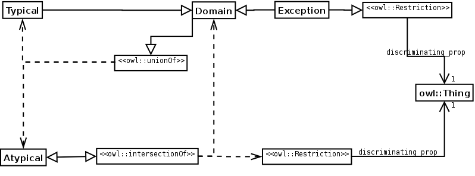
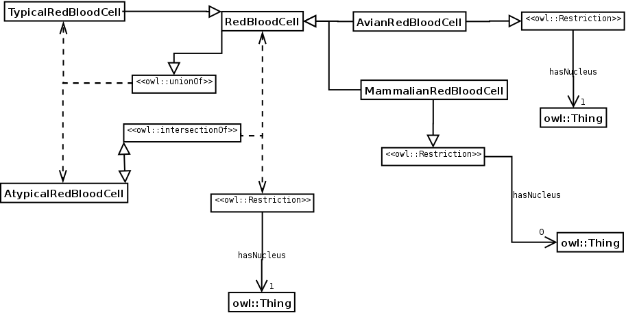

NAME: Exception.
CLASSIFICATION: Extension.
MOTIVATION: Plenty of areas of knowledge work with defaults or canonical knowledge: biological classifications, for example, state what is the canonical norm and then the exceptions are classified under the norm, even if the classification is inconsistent from the point of view of logic. A clear example can be found in the classification of cells: in canonical biology eukaryotic cells are considered to be cells with a nucleus. Mammalian red blood cells are considered by any biologist as eukaryotic cells, but they lack a nucleus. Thus they are a subclass of eukaryotic cells, but they break the condition for belonging to that class (having a nucleus).
AIM: to model exceptions without breaking the strict class-subclass hierarchy: for example the class MammalianRedBloodCell (with the restriction HasNucleus exactly 0) would be a subclass of EukaryoticCell (with the restriction HasNucleus exactly 1), resulting in an inconsistent ontology. There can be exceptions to the exception in the next level: avian red blood cells do posses a nucleus, thus, they are considered normal eukaryotic cells (they are an exception to the norm that all red blood cells lack a nucleus). So the problem that this ODP solves can rise in different levels.
STRUCTURE:
SAMPLE:
ELEMENTS: The most important elements are the newly created TypicalEukaryoticCell, TypicalRedBloodCell, AtypicalEukaryoticCell, AtypicalRedBloodCell classes. The rest of the classes are maintained. The most important object property is the discriminating property, in this case, HasNucleus.
IMPLEMENTATION: Starting from the example ontology described in the Aim section, two disjoint classes are created for typical and atypical elements. The discriminating condition HasNucleus is only stated in the typical subclass. A covering axiom is added to the main class (i.e. EukaryoticCell) to state that all instances must belong to one or the other subclass (TypicalEukaryoticCell or AtypicalEukaryoticCell). A covering axiom is done by creating a equivalent class (a neccesary and sufficient condition) that is the union of the subclasses (In this case TypicalEukaryoticCell and AtypicalEukaryoticCell). The reasoner will infer the whole structure.
RESULT: After reasoning the correct hierarchy is obtained, with the typical/atypical distinction at every level.
SIDE EFFECTS: If the ODP is used in plenty of different levels of the ontology it can produce too complex and unmanageable ontologies. This type of structure can be very counter-intuitive for biologists.
REFERENCES:
URL: http://odps.sourceforge.net/odp/owl/Extension_ODP/Exception.owl